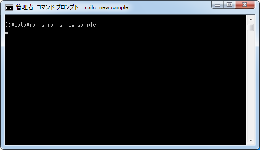
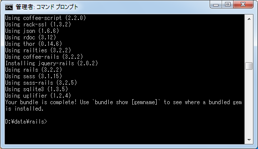
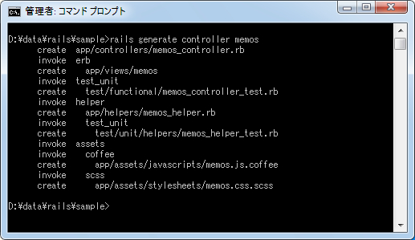
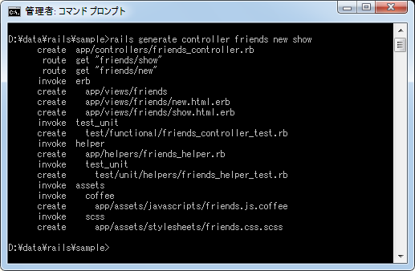
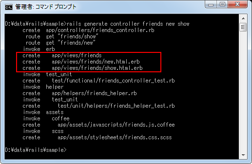
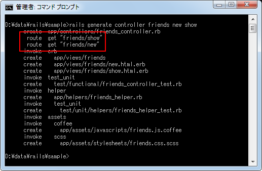
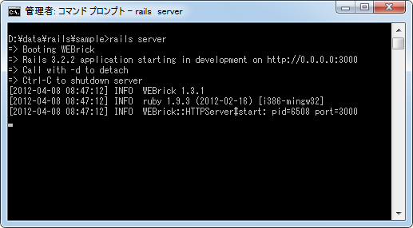
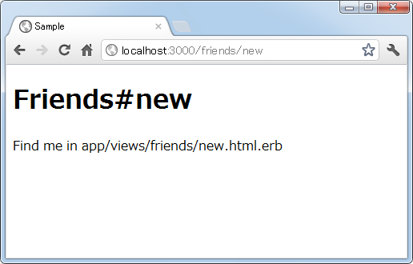
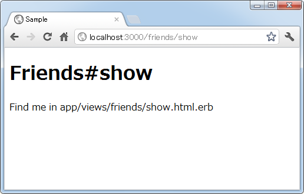

アクションの作成と呼び出し
前のページでコントローラの作成方法について確認しましたが、利用者から実際に呼び出されるのがコントローラに作成されたアクションです。コントローラはクラスとして定義されましたが、アクションはクラスの中のメソッドとして定義します。このページではアクションの作成方法について確認し、その後で作成したアクションを実際にブラウザから呼び出してみます。
1.アクションの作成
2.文字コード
3.コントローラの作成時にアクションも同時に作成
4.アクションの呼び出し
アクションの作成
ではアクションを作成してみます。今回は「sample」アプリケーションの中に「memos」コントローラを作成しアクションを追加してみます。次のようにアプリケーションとコントローラを作成しました。
rails new sample


rails generate controller memos

自動的に作成されたファイルの中で「app/controllers/memos_controller.rb」がコントローラに関して記述されたファイルとなります。テキストエディタで開いてみると次のように記述されています。
class MemosController < ApplicationController end
ではアクション用のメソッドを定義してみます。アクションは利用者から呼び出されるメソッドですのでpublicのメソッドとして定義します。今回は「new」アクションと「show」アクションを定義してみます。
class MemosController < ApplicationController def new end def show end end
あとはメソッドの中に呼び出されたときに実行する内容を記述していきます。
文字コード
アクション用のメソッドを記述した場合、編集したファイルの文字コードを UTF-8 で保存して下さい。これはRailsのほうの決まりごとです。またメソッド内で日本語を使用する場合にはクラスの先頭に次の1行を付け加えて下さい。
# coding: utf-8
class MemosController < ApplicationController
def new
end
def show
end
end
この1行はマジックコメントと呼ばれるもので、Rubyがスクリプトファイルを実行するときにファイル内で使われている文字コードを判別するのに使われます。ファイルは UTF-8 で保存しますので、マジックコメントで指定する文字コードも UTF-8 となります。記述されていない場合はASCIIとして処理されてしまいエラーなどの原因となりますのでご注意下さい。
コントローラの作成時にアクションも同時に作成
コントローラを作成する時に同時にアクションを作成することも可能です。次の書式を使います。
rails generate controller コントローラ名 アクション名1 アクション名2 ...
では実際に試してみます。先程作成した「sample」アプリケーションの中に「friends」コントローラを作成し、同時に「new」アクションと「show」アクションを作成してみます。

まずコントローラとして「app/controllers/friends_controller.rb」ファイルが作成されています。テキストエディタでファイルを開いてみると次のように記述されています。
class FriendsController < ApplicationController def new end def show end end
コントローラクラスだけでなく「new」アクションメソッドと「show」アクションメソッドが記述されています。このようにコントローラ作成と同時にアクションメソッドを定義しておくことが可能です。
またコントローラ作成時にアクションを同時に作成した場合、ビューも合わせて作成されています。先程のコマンドプロンプトの結果を見て下さい。

「app/views/friends/new.html.erb」と「app/views/friends/show.html.erb」というファイルが作成されています。それぞれ「new」アクションと「show」アクションのデフォルトのビューファイルです。
では「app/views/friends/new.html.erb」ファイルをテキストエディタで開いてみると次のように記述されています。
<h1>Friends#new</h1> <p>Find me in app/views/friends/new.html.erb</p>
デフォルトで2行ほどHTML文が記述されています。ビューを使用する場合はファイルの中身を編集して下さい。
またルーティングについても自動的に追加されています。

アプリケーションのルーティングに関する記述は「app/config/routes.rb」ファイルに行ないますが、テキストエディタでこのファイルを開いてみると次の2行が追加されていることが分かります。(コメント行は省略しています)。
Sample::Application.routes.draw do get "friends/new" get "friends/show" end
ルーティングに関する解説はここでは行ないませんが、ブラウザから「http://localhost:3000/friends/new」へアクセスすると、「friends」コントローラの「new」アクションが呼び出されるように記述されています。
以上のようにコントローラを作成時にアクションも同時に作成することで、アクションに対するデフォルトのビューを作成し、簡単なルーティングも自動的にルーティングファイルに追加することができます。
アクションの呼び出し
アクションを利用者がどのように呼び出すのかはルーティングの設定次第ですが、先程作成した「friends」コントローラは既にルーティングまで設定されていますので、アプリケーションを起動し実際にアクションを呼び出してみます。
それではコマンドプロンプトで起動するアプリケーションのルートに移動し「rails server」と実行してアプリケーションを起動して下さい。

次にブラウザから「http://localhost:3000/friends/new」へアクセスして下さい。すると次のように表示されます。

ルーティングファイルに記述された内容に従い「friends」クラスの「new」メソッドが呼び出されます。今回「new」メソッドには何も記述していませんので、デフォルトのビューが自動的に呼び出され「app/views/friends/new.html.erb」ファイルに記述された内容が利用者のブラウザへ返されて上記のように表示されました。
同じようにブラウザから「http://localhost:3000/friends/show」へアクセスして下さい。すると次のように表示されます。

今度は「friends」クラスの「show」メソッドが呼び出され、デフォルトのビューである「app/views/friends/show.html.erb」ファイルに記述された内容が利用者のブラウザへ返されて上記のように表示されました。
実際のアプリケーションでは、アクションメソッドの中でモデルを介してデータベースのデータを取得したあとで変数を介してビューへ渡し、ビューでデータを加工してブラウザへ結果を返すといったことを行なっていくことになります。
( Written by Tatsuo Ikura )

著者 / TATSUO IKURA
初心者～中級者の方を対象としたプログラミング方法や開発環境の構築の解説を行うサイトの運営を行っています。